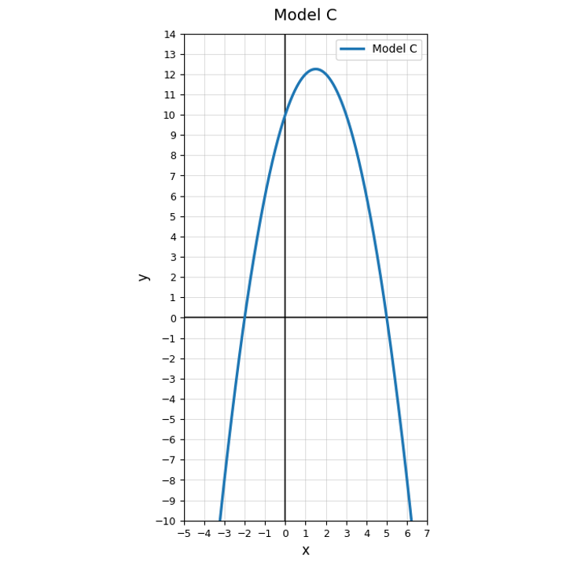

Solve.
$$x(x-11)=0$$
Factor and solve.
$$x^2-4x-21=0$$
Kyle solved $(x-5)(x+2)=-6$ by setting each factor equal to $-6$. Explain why that does not work. Then rewrite the equation so one side is zero.
A rectangular garden has area $48$ square feet. Its length is $x+2$ feet and its width is $x-4$ feet. Write a quadratic equation, solve it by factoring, and interpret which solution makes sense.
Classify $y=x^2+2x-15$ as standard, vertex, or factored form.
Which form most directly shows the zeros of a quadratic?
Which form most directly shows the vertex of a quadratic?
Use Model C. Does the graph open up or down?

Factor $x^2-8x+15$ and identify what the factored form reveals.
Which representation would you choose to estimate both zeros quickly: a table, a graph, vertex form, or standard form? Explain.
Compare $y=(x-4)^2-9$ and $y=(x-7)(x-1)$. Explain how each form highlights a different feature of the same possible quadratic.
Create a quadratic in factored form with two integer zeros. Then expand it and describe one feature that became less visible.
Find the zeros of $y=(2x-6)(x+4)$.
Write a possible factored equation with zeros $-3$ and $5$.
A quadratic graph crosses the $x$-axis at $-2$ and $7$. Explain what those values mean for the equation $y=0$.
Create a situation where only one zero of a quadratic is reasonable in context. Explain why the other zero is rejected.